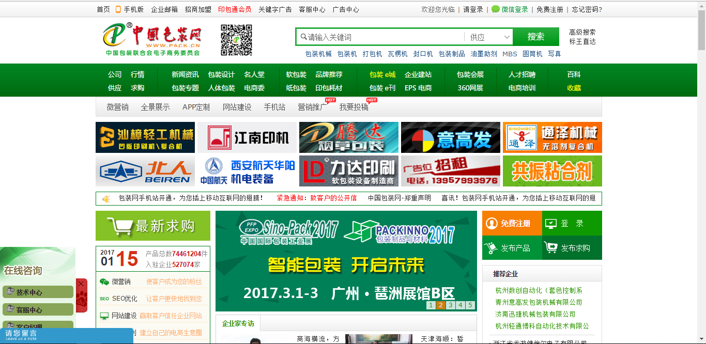

-
- Basic info. 基本信息
- 个人信息: 陈福华 / 男 / 26岁
- 英语水平: CET-4
- 常用ID: arrayhua
- Blog: blog.csdn.net
-
- Skill. 技能清单
Web前端
-
HTML / CSS
能够编写语义化的 HTML，模块化的 CSS，完成基本的布局
-
JavaScript
熟悉原生Javascript，jQuery等类库编码
能运用模块化、面向对象的方式编程
-
其他
了解前端发展，新技术的变化，如react、react-native
前端安全、性能优化方面的一些小知识
后端
-
环境
熟悉 Linux 开发环境、 Linux 服务器环境搭建部署，两年 Linux 日常使用经验
了解 Apache web服务器，两年多网站开发经验
-
语言
熟悉 Java，参与过从零开始的大型项目后台业务开发，对分布式开发有较为深入的了解
精通 PHP，能够实现网络爬虫、数据及图像处理工具、编写存储过程，sql语句分析优化，自动化脚本
对数据迁移（oracle->mysql）、大数据量导入导出比较有研究
-
框架
精通 YII，复杂的业务逻辑开发、数据的读写分离、RBAC角色访问控制、插件使用开发
对php的自身语言优化、sql语句优化、网站性能分析优化都有较好的实践
其他
-
自从大二喜欢上技术开始，慢慢从一个调皮捣蛋的人转变成一个沉稳的人，从一个爱跳街舞的男孩慢慢变成一个老男孩，从实习到现在在中大型网站项目中担任后台开发。技术方面在对：
业务逻辑开发、数据处理、数据的读写分离、数据库设计与后台优化、数据库集群等方面都有较好的研究与实践
中度强迫症，当遇到问题的时候不能忍受没有解决而下班或者放弃，就算在寒冷的冬天，身体冻成狗，也要先把今天制定的目标完成
学习能力强，从大二到工作，从工作到现在的。一直在自我充电，在技术领域越走越深、越广。
掌握Git，PHPStorm等开发工具的使用
-
- Experience. 项目与工作经验
北京蓝线咨询有限责任有限公司（2015.3.1 - 2015.7.1）
-
ERP系统 链接
整个系统从零开始采用分布式开发技术。我在负责的领域为: 负责整个系统的后台代码编写。 负责前台界面与后台界面接口相接。
使用 JAVA+EJB+JPA 和 AngularJS 框架 来实现前端组件及数据交互

中国包装网（2015.7.7 - 2016.3.1）
-
中国包装网官网 链接
负责页面的制作与编写，进行该行业的数据进行采集，编写标签完成与后台系统的对接，项目后期负责系统的调试，调优
 -
中华收藏网 链接
编写后端业务逻辑
使用纯php语言编写，负责站内信的数据结构设计与开发

-
其他
建站
杭州向上网络科技有限公司（2016.3.2 - 至今）
-
在线教育平台 链接
负责后台开发
arrayhua的简历
"一腔热血的激情&一夜失眠的苦想=一段代码的执着"
-
- Contact. 联系方式
- 邮箱: 2498168786@qq.com
- 微信: 2498168786
- QQ: 2498168786
-
- Application. 应聘岗位
- PHP工程师
-
- Tech. 技能点
PHPYIIMYSQLLINUXJAVA
我是一个沉默寡言但对后端技术由衷热爱、善于发现问题的PHP工程师。
我目前正在寻找一份PHP的工作,2012年到现在我的人生指导一直是：一腔热血的激情&一夜失眠的苦想=一段代码的执着，并一直执行着我的代码人生